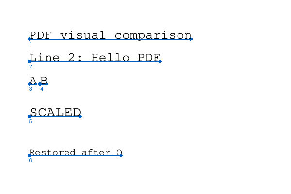

visual
Source: tests/fixtures/visual-m7-text.pdf · page 1 · SHA-256 6414fa8208884a3655b494b44c8ff1fef100872365194e03e8e53128b304ff45
Original PDF, rendered by Poppler

Project geometry overlay

Blue: origin and advance. Pink: Tr=3 event, intentionally invisible on original. Labels follow source order.
| Raw ASCII preview | Expected origin / advance | Actual | Max delta | Result |
|---|---|---|---|---|
| PDF visual comparison | [36, 192, 201.6, 0] | [36.0, 192.0, 201.6, 0.0] | 0 | PASS |
| Line 2: Hello PDF | [36, 164, 163.2, 0] | [36.0, 164.0, 163.2, 0.0] | 0 | PASS |
| A | [36, 136, 9.6, 0] | [36.0, 136.0, 9.6, 0.0] | 0 | PASS |
| B | [49.6, 136, 9.6, 0] | [49.6, 136.0, 9.6, 0.0] | 0 | PASS |
| SCALED | [36, 96, 64.8, 0] | [36.0, 96.0, 64.8, 0.0] | 0 | PASS |
| Restored after Q | [36, 48, 115.2, 0] | [36.0, 48.0, 115.2, 0.0] | 0 | PASS |
Actual project trace (raw bytes; not Unicode)
{"page":1,"order":0,"offset":55,"segment":0,"bytes":"5044462076697375616c20636f6d70617269736f6e","font_len":2,"font":"4631","size":16.000000000,"Tc":0.000000000,"Tw":0.000000000,"scale":1.000000000,"leading":0.000000000,"rise":0.000000000,"mode":0,"origin":[36.000000000,192.000000000],"advance":[201.600000000,0.000000000],"rendering":[16.000000000,0.000000000,0.000000000,16.000000000,36.000000000,192.000000000],"before":[1.000000000,0.000000000,0.000000000,1.000000000,36.000000000,192.000000000],"after":[1.000000000,0.000000000,0.000000000,1.000000000,237.600000000,192.000000000],"line":[1.000000000,0.000000000,0.000000000,1.000000000,36.000000000,192.000000000],"ctm":[1.000000000,0.000000000,0.000000000,1.000000000,0.000000000,0.000000000]}
{"page":1,"order":1,"offset":87,"segment":0,"bytes":"4c696e6520323a2048656c6c6f20504446","font_len":2,"font":"4631","size":16.000000000,"Tc":0.000000000,"Tw":0.000000000,"scale":1.000000000,"leading":28.000000000,"rise":0.000000000,"mode":0,"origin":[36.000000000,164.000000000],"advance":[163.200000000,0.000000000],"rendering":[16.000000000,0.000000000,0.000000000,16.000000000,36.000000000,164.000000000],"before":[1.000000000,0.000000000,0.000000000,1.000000000,36.000000000,164.000000000],"after":[1.000000000,0.000000000,0.000000000,1.000000000,199.200000000,164.000000000],"line":[1.000000000,0.000000000,0.000000000,1.000000000,36.000000000,164.000000000],"ctm":[1.000000000,0.000000000,0.000000000,1.000000000,0.000000000,0.000000000]}
{"page":1,"order":2,"offset":108,"segment":0,"bytes":"41","font_len":2,"font":"4631","size":16.000000000,"Tc":0.000000000,"Tw":0.000000000,"scale":1.000000000,"leading":28.000000000,"rise":0.000000000,"mode":0,"origin":[36.000000000,136.000000000],"advance":[9.600000000,0.000000000],"rendering":[16.000000000,0.000000000,0.000000000,16.000000000,36.000000000,136.000000000],"before":[1.000000000,0.000000000,0.000000000,1.000000000,36.000000000,136.000000000],"after":[1.000000000,0.000000000,0.000000000,1.000000000,45.600000000,136.000000000],"line":[1.000000000,0.000000000,0.000000000,1.000000000,36.000000000,136.000000000],"ctm":[1.000000000,0.000000000,0.000000000,1.000000000,0.000000000,0.000000000]}
{"page":1,"order":3,"offset":108,"segment":2,"bytes":"42","font_len":2,"font":"4631","size":16.000000000,"Tc":0.000000000,"Tw":0.000000000,"scale":1.000000000,"leading":28.000000000,"rise":0.000000000,"mode":0,"origin":[49.600000000,136.000000000],"advance":[9.600000000,0.000000000],"rendering":[16.000000000,0.000000000,0.000000000,16.000000000,49.600000000,136.000000000],"before":[1.000000000,0.000000000,0.000000000,1.000000000,49.600000000,136.000000000],"after":[1.000000000,0.000000000,0.000000000,1.000000000,59.200000000,136.000000000],"line":[1.000000000,0.000000000,0.000000000,1.000000000,36.000000000,136.000000000],"ctm":[1.000000000,0.000000000,0.000000000,1.000000000,0.000000000,0.000000000]}
{"page":1,"order":4,"offset":174,"segment":0,"bytes":"5343414c4544","font_len":2,"font":"4631","size":12.000000000,"Tc":0.000000000,"Tw":0.000000000,"scale":1.000000000,"leading":28.000000000,"rise":0.000000000,"mode":0,"origin":[36.000000000,96.000000000],"advance":[64.800000000,0.000000000],"rendering":[18.000000000,0.000000000,0.000000000,18.000000000,36.000000000,96.000000000],"before":[1.000000000,0.000000000,0.000000000,1.000000000,24.000000000,64.000000000],"after":[1.000000000,0.000000000,0.000000000,1.000000000,67.200000000,64.000000000],"line":[1.000000000,0.000000000,0.000000000,1.000000000,24.000000000,64.000000000],"ctm":[1.500000000,0.000000000,0.000000000,1.500000000,0.000000000,0.000000000]}
{"page":1,"order":5,"offset":231,"segment":0,"bytes":"526573746f7265642061667465722051","font_len":2,"font":"4631","size":12.000000000,"Tc":0.000000000,"Tw":0.000000000,"scale":1.000000000,"leading":28.000000000,"rise":0.000000000,"mode":0,"origin":[36.000000000,48.000000000],"advance":[115.200000000,0.000000000],"rendering":[12.000000000,0.000000000,0.000000000,12.000000000,36.000000000,48.000000000],"before":[1.000000000,0.000000000,0.000000000,1.000000000,36.000000000,48.000000000],"after":[1.000000000,0.000000000,0.000000000,1.000000000,151.200000000,48.000000000],"line":[1.000000000,0.000000000,0.000000000,1.000000000,36.000000000,48.000000000],"ctm":[1.000000000,0.000000000,0.000000000,1.000000000,0.000000000,0.000000000]}
External Poppler word boxes · Project raw trace · CLI stderr